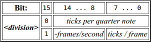

MIDI文件结构
14/Apr 2017
Chunks
一个MIDI文件由多个Chunk(块)构成.
1个Chunk包含以下信息:
| type | length | data |
|---|---|---|
| 4byte | 4byte | length bytes |
- type: 4-byte, 表示该chunk的类型
- length: 4-byte, 表示该chunk中data数据的长度
- data: n-byte, 该chunk中存放的数据主体
一共存在两种类型的Chunk:
头部块: Chunk.type = “MThd” 轨道块: Chunk.type = “MTrk”
一个MIDI文件由1个头部块加上1到n个的轨道块构成.
Chunk.length决定了Chunk的总长度, MIDI文件中可以存在MThd与MTrk之外的Chunk, 但是这些数据都应当被直接忽略. 在MIDI规范中要求软件应当能应付这种异常情况.
| type | length | data |
|---|---|---|
| MThd | 6 | [format], [tracks], [division] |
| MTrk | [length] | [delta_time], [event] |
| MTrk | [length] | [delta_time], [event] |
值的含义:
MIDI文件中, 除了基础的信息外, 还包括如:delta-times与meta-events.
这些信息包含数值, 这些信息通常以以下两种格式存在:
* 二进制
* 变长数值
二进制
用以下方式存储: * 8-bits 1byte * MSB first (Most Significant Byte first) (除非另有规定)
变长数值
变长数值提供了一种简单的表示任意大小数值的方式，没有必要来用定长的数值来表示，避免了不必要的长度浪费。 一个变长数值由n个8bit(最高1位+后面7bit表示）组成. 非结尾的byte/8bit, 最高bit为1. 最后1byte最高bit为0. Example:
| Decimal | Hex | Binary | Veriable-Length-Representation Binary | Veriable-Length-Representation Hex |
|---|---|---|---|---|
| - | abcd | aaaabbbbccccdddd | 100000aa 1aabbbbc 0cccdddd | - |
| 0 … 127 | 00 … 7F | 0000 0000 … 0111 1111 | 0000 0000 … 0111 1111 | 00 … 7F |
| 128 … 16383 | 80 … 3FFF | 00000000 10000000 … 00111111 11111111 | 100000001 00000000 … 11111111 01111111 | 81 00 … FF 7F |
| 1000 | 03E8 | 11 1110 1000 | 10000111 01101000 | 87 68 |
| 100000 | 0F4240 | 1111 0100 0010 0100 0000 | 10111101 10000100 01000000 | BD 84 40 |
上面例子可以看到，每个byte中有7-bit(可容纳0-127)用来存放具体的值。 在MIDI文件中允许的最大值为：0FFFFFFF, 也就是占用4byte (32bit)。
Header Chunks
这里的Data数据由3部分16bit的字段构成，分别为：描述格式、描述音轨数和描述事件定时.
header 为6-bytes. 读取MIDI文件时需要遵循长度字段, 就算超过预期长度, 也需要忽略. Header Chunk:

length 指明chunk中的data长度. 这是一个MSB的32-bit数值. 在MIDI 1.0下时, 这里的数值通常都为6(byte). 尽管如此, 还是要考虑更大的尺寸, 以兼容未来可能的扩展.
format 指明该MIDI的格式 这是一个MSB的16-bit数值. 这里有效的值为三种: 0, 1和2.
tracks 指明该MIDI文件包含的音轨chunks数量. 这是一个MSB的16-bit数值.
division 这里定义了一个delta-time单位的时长. 这是一个MSB的16-bit数值. 该值为以下两种格式之一:

if (bit 15 == 0): bits 0-14 : 每四分之一音符中，包含多少个Tick(Tick是MIDI中的最小时间单位).
if (bit 15 == 1): bits 0-7: 每SMTPE frame有多少Tick. bits 8-14: 这里由负数构成，表示每秒有多少个SMTPE frames, 呼应bit 0-7.
-24 = 24 frames per second
-25 = 25 frames per second
-29 = 30 frames per second, drop frame
-30 = 30 frames per second, non-drop frame
**总结以上两种division值的类型: **第一种以四分之一音符来描述速度, 而第二种以SMTPE frame来描述速度(先确定每秒的frame数，然后再从frame中确定出Tick数, 实际上就是确定了速度) .
http://www.personal.kent.edu/~sbirch/Music_Production/MP-II/MIDI/midi_system_common_messages.htm
MIDI 文件格式
MIDI文件有3个变种： * Format 0 只包含单个音轨. * Format 1 包含一或多个同步的音轨(可以理解为不同乐器演奏一首曲子) * Format 2 包含一或多个独立的音轨(理解为该文件内包含多首曲子?)
… 后续还未完成..
原文
http://cs.fit.edu/~ryan/cse4051/projects/midi/midi.html（已失效） https://www.csie.ntu.edu.tw/~r92092/ref/midi/